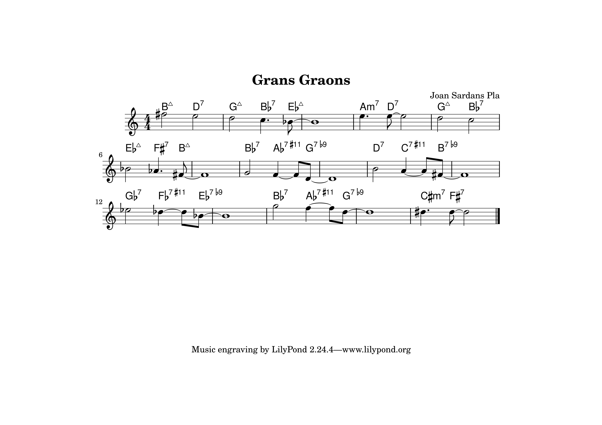

Galeria

Actuacions i Videoclips
Una selecció de concerts, recitals i actuacions en directe
Acompanyant el cant
Acompanyant un cantador
Música instrumental
Partitures i Composicions
Mostra de partitures disponibles per interpretar
